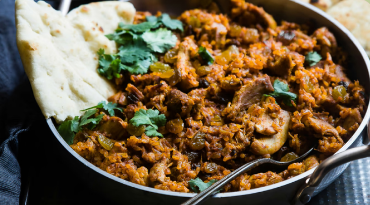
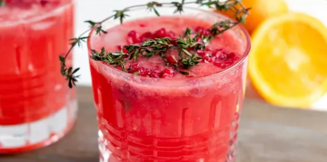
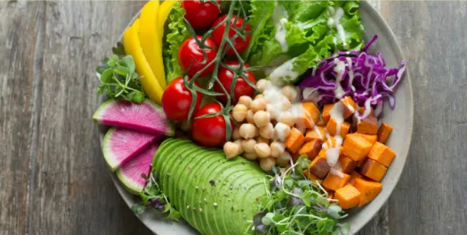

Blog
Découvres nos recettes santé et gourmandes !
Nos recettes

Bol énergie
Une recette réconfortante pour petits et grands!

Bol énergie
Une recette réconfortante pour petits et grands!

Bol énergie
Une recette réconfortante pour petits et grands!